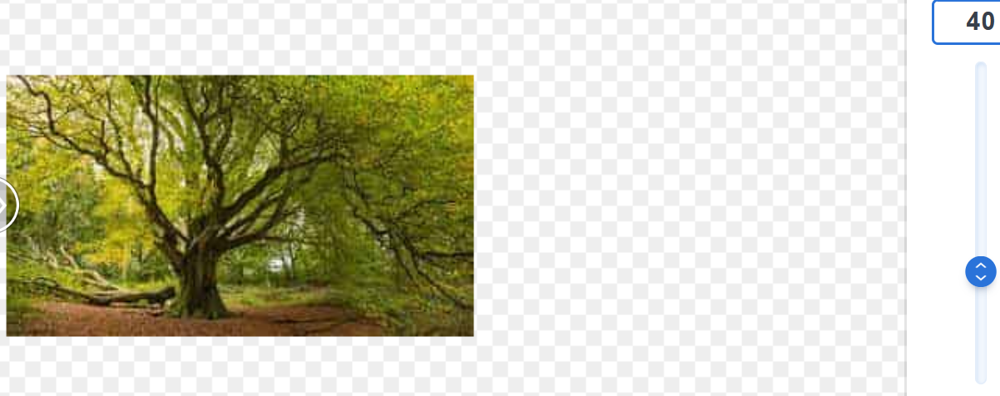
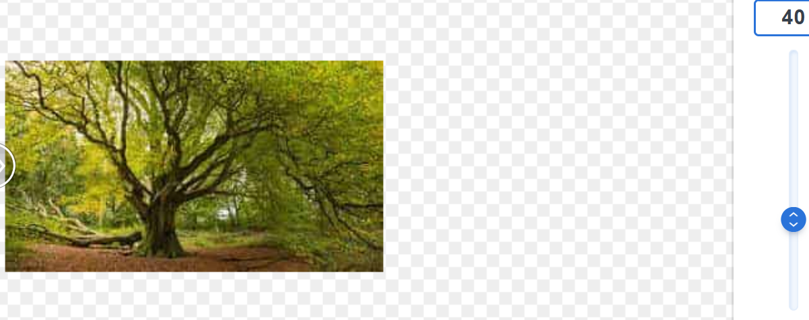

Je kunt zien dat de kwaliteit van de afbeelding alsmaar vermindert naarmate je het jpeg-bestand comprimeert. Hoe lager de grootte van de afbeelding (dus hoe lager het aantal Mb/Kb), hoe slechter de kwaliteit van de afbeelding. Wel is het verschil tussen de hiernaast afgebeelde jpeg-bestanden minder zichtbaar dan op de site zelf want juist diezelfde afbeeldingen werd comprimeert naar mijn computer.
 

De tekst wordt alsmaar onleesbaarder naarmate je de afbeelding comprimeert.